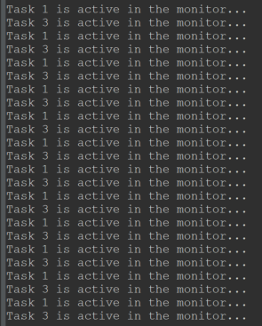
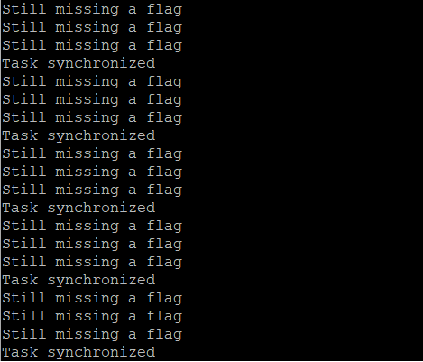

| This document is a high-level system description. Except for code snippets, features are described with a generic API. Kernel API details can be found at the project: repository. |
The kernel on a glance
1. The design approach
In my early teens, when I was first introduced to UNIX-like operating systems, I barely knew any programming, yet I was intrigued by the idea that UNIX was an operating system 'for programmers. Eventually, I understood. K0BA is rooted in this understanding.
K0 aims to showcase the idea that embedded system programming—more than any other type of systems programming—does not benefit from an application framework approach. Maintaining complete control is essential in embedded systems to ensure efficiency and predictable behaviour.
When composed to build more complex functionality, a balanced set of simple primitives provides greater controllability and observability than any opaque, complex feature.
This is a timeless lesson from UNIX—one that modern RTOSes often neglect, despite its increasing relevance in embedded systems.
1.1. K0 is different
Low-end MCUs based on the supported architecture (ARMv7M) often do not come with a Memory Protection Unit - so privilege levels are limited to the CPU scope: instructions and registers. This level of safety does not compensate for the overhead of system calls, as they harm determinism and responsiveness.
That said, K0BA is not currently designed with IoT in mind. However, work is underway on a security-focused edition. The edition presented here is optimised for determinism, responsiveness, and a minimal footprint.
As of today, K0 is a one-man effort. Thus, supporting a wide range of CPU architectures is not on the radar. The plan is to support a few with quality.
1.2. A Real-Time Executive
If no more details are to be provided, the kernel has a top and a bottom layer - on the top, the Executive manages the resources needed by the application; on the bottom, the Low-level Scheduler works as a software extension of the CPU.
Together, they implement the Task concept and provide the primitives for a programmable multitasking environment.

A process is composed of an execution image and an address space. A thread is a logical sequence of instructions. Several threads coexist in the same address space within the same process.
On the embedded realm, probably because we lack a better abstraction, we use multithreading to fine-tune our load balance and, therefore, responsiveness to achieve real-time.
This is an arrangement: instead of having a single super-loop, we have many, each running on its own execution stack.
This arrangement yields an operating system entity to handle—a (logical) Execution Unit: in K0, we name it a Task (the terms task and thread are used interchangeably in this document).
The K0 multitasking engine is wired to a single process on a single address space - as the majority of small kernels you see around (regardless the claims of being micro, nano or pico kernels).
1.2.1. The coding style
K0BA’s coding style may seem "inelegant" to those accustomed to Zephyr (Linux Style) or FreeRTOS (its style). The reality is that K0 adheres to traditional RTOS coding style, with a touch of (early) BSD influence. FreeRTOS and Zephyr that did different.
Much of the so-called "software engineering" best practice were never intended for systems programming. K0’s code deliberately repeat patterns rather than introduce unnecessary coupling that would hinder long-term evolution. The code prioritises observability and debuggability, not opaque structures.
|
Embedded Kernel Dysphoria. The misguided belief that a single (physical) address space running clueless threads can somehow mimic a GPOS—and that doing so is desirable for embedded system software. |
Core Mechanisms
This section provides a high-level description of the kernel core mechanisms: scheduler, timers, and memory allocator.
1. Data Structures
1.1. Task Control Block
Threads are represented as Tasks. Every task is associated to a Task Control Block structure. This is a record for stack, resources and time management. The table below represent a Task Control Block with all optional features enabled.
| Task Control Block |
|---|
Task name |
Saved Stack Pointer |
Stack Address |
Stack Size |
Status (ready, running, sending…) |
Assigned Priority |
Current Priority |
Time-Slice |
Remaining time-slice |
Last wake-time |
Binary Semaphore Status |
Event Flags |
Self-Assigned ID |
Task Handle Address |
Run-To-Completion Flag |
Time-out Flag |
Yield Flag |
Aggregated list node |
Tasks are static - they cannot be created on runtime, to be destroyed, to fork or join.
In practice, tasks are either running or waiting for their turn to run. When there is no blocking condition, we say a task is READY—it is just waiting for the scheduler. When there is a blocking condition, the task is WAITING. A task needs to be READY to be picked up by the kernel scheduler and switched to RUNNING.
We extend the WAITING state logically as:
-
PENDING : the task suspended itself waiting for a direct signal.
-
SLEEPING: A task is normally sleeping for an event. We explore this broad concept a bit later.
-
BLOCKED: A task is blocked in a critical region when trying to access a busy resource.
-
SENDING/RECEIVING: This is the same as blocked, but the busy resource is a kernel object for the message passing (or similar) mechanism.
1.1.1. Task Queues
The backbone of the queues where tasks will wait for their turn to run is a circular doubly linked list: removing any item from a doubly list takes O(1) (provided we don’t need to search the item). As the kernel knows each task’s address, adding and removing is always O(1). Singly linked lists, can’t achieve O(1) for removal in any case.
Another design choice towards achieving O(1) is the global ready queue, which is a table of FIFO queues—each queue dedicated to a priority—and not a single ordered queue. So, enqueuing a ready task is always O(1). Given the sorting needed, if tasks were placed on a single ready queue, the time complexity would be O(n).
1.2. The scheduling algorithm
It goes like this: as the ready queue table is indexed by priority - the index 0 points to the queue of ready tasks with priority 0, and so forth, and there are 32 possible priorities - a 32-bit integer can represent the state of the ready queue table. It is a BITMAP:
The BITMAP computation: ((1a) OR (1b)) AND (2), s.t.:
(1a) Every Time a task is readied, update: BITMAP |= (1U << task->priority );
(1b) Every Time an empty READY QUEUE becomes non-empty, update: BITMAP |= (1U << queueIndex)
(2): Every Time READY QUEUE becomes empty, update: BITMAP &= ~(1U << queueIndex);
EXAMPLE:
Ready Queue Index : (6)5 4 3 2 1 0
Not empty : 1 1 1 0 0 1 0
------------->
(LOW) Effective Priority (HIGH)
In this case, the scenario is a system with 7 priority task levels. Queues with priorities 6, 5, 4, and 1 are not empty.The idle task priority is assigned by the kernel, during initialisation, taking into account all priorities the system programmer has defined. Unless user tasks are occupying all 32 priorities, the Idle Task is treated as an ordinary lowest priority and has a position in the queue. If not, the idle task on practice will have no queue position and will be selected when the BITMAP is 0. In the above bitmap, the idle task is in readyQueue[6].
Given this mask, we know that we shall start inspecting on the LSBit and stop when the first 1 is found. There are uncountable manners of doing this. The approach I chose is:
(1) Isolate the rightmost '1':
RBITMAP = BITMAP & -BITMAP. (- is the bitwise operator for two's complement: ~BITMAP + 1) `In this case:
[31] [0] : Bit Position
0...1110010 : BITMAP
1...0001110 : -BITMAP
=============
0...0000010 : RBITMAP
[1]The rationale here is that, for a number N, its 2’s complement -N, flips all bits - except the rightmost '1' (by adding '1') . Then, N & -N results in a word with all 0-bits except for the less significant '1'.
(2) Extract the rightmost '1' position:
Within GCC, the _builtin_ctz() function does the trick: it returns the number of trailing 0 bits within an integer, starting from the LSbit. The number of 'trailing zeroes' equals the position where the first '1' is found, which is also the ready queue index (and hence the priority) of the next task to be dispatched.
Using ARMv7M instructions, a possible solution is to use the CLZ (count lead zeros):
.global __getReadyPrio
.type __getReadyPrio, %function
.thumb_func
__getReadyPrio:
CLZ R12, R0
MOV R0, R12
NEG R0, R0
ADD R0, #31
BX LRThus, we subtract 31 from the number of leading zeroes, and get the index.
The source code in K0BA looks like:
static inline PRIO kCalcNextTaskPrio_()
{
if (readyQBitMask == 0U)
{
return (idleTaskPrio);
}
readyQRightMask = readyQBitMask & -readyQBitMask;
PRIO prioVal = (PRIO) (__getReadyPrio(readyQRightMask));
return (prioVal);
/* or GCC builtin (more portable): */
/* return (PRIO)(__builtin_ctz(readyQRightMask)); */
}
VOID kSchSwtch(VOID)
{
nextTaskPrio = calcNextTaskPrio_();
K_TCB* nextRunPtr = NULL;
K_ERR err = kTCBQDeq( &readyQueue[nextTaskPrio], &nextRunPtr);
if ((nextRunPtr == NULL) || (err != K_SUCCESS))
{
kErrHandler(FAULT_READYQ);
}
runPtr = nextRunPtr;
}1.3. Scheduler Determinism
1.3.1. Preemptive Scheduling
This is a simple test to establish some evidence the scheduler obeys the pre-emption criteria: a higher priority task always pre-empts a lower priority task.
Task1, 2, 3, 4 are in descending order of priority. If the scheduler is well-behaved, we shall see counters differing by "1".
VOID Task1(VOID)
{
while(1)
{
counter1++;
kPend(K_WAIT_FOREVER);
}
}
VOID Task2(VOID)
{
while(1)
{
counter2++;
kSignal(task1Handle); /* shall immediately be preempted by task1 */
kPend(K_WAIT_FOREVER); /* suspends again */
}
}
VOID Task3(VOID)
{
while(1)
{
counter3++;
kSignal(task2Handle); /* shall immediately be preempted by task2 */
kPend(K_WAIT_FOREVER); /* suspends again */
}
}
VOID Task4(VOID)
{
while(1)
{
counter4++;
kSignal(task3Handle); /* shall immediately be preempted by task3 */
/* as the lowest priority task it will only be resumed
after all higher priority tasks are suspended */
}
}This is the output after some time running:

In the above example we have used direct signals. Using semaphores:
K_SEMA sema1;
K_SEMA sema2;
K_SEMA sema3;
K_SEMA sema4;
VOID kApplicationInit(VOID)
{
kSemaInit(&sema1, 0);
kSemaInit(&sema2, 0);
kSemaInit(&sema3, 0);
kSemaInit(&sema4, 0);
}
VOID Task1(VOID)
{
while (1)
{
counter1++;
kSemaWait(&sema1, K_WAIT_FOREVER);
}
}
VOID Task2(VOID)
{
while (1)
{
counter2++;
kSemaSignal(&sema1);
kSemaWait(&sema2, K_WAIT_FOREVER);
}
}
VOID Task3(VOID)
{
while (1)
{
counter3++;
kSemaSignal(&sema2);
kSemaWait(&sema3, K_WAIT_FOREVER);
}
}
VOID Task4(VOID)
{
while (1)
{
counter4++;
kSemaSignal(&sema3);
}
}
Here tick is running @ 1ms (1KHz)
1.3.2. Cooperative Scheduling
If we set all tasks at the same priority and every tasks yields the processor, they will run on a round-robin fashion, one after another. So, every time we pause chances are we will be "somewhere in the middle" of a round.
If every task increases a counter before yielding what we expect to see is a set of counters on a fashion {K, K, K, K-1, K-1, K-1}. Importantly a counter will not offset another by more than 1 if the scheduler is deterministic.
/* All tasks have the same priority */
VOID Task1(VOID)
{
while (1)
{
count1 += 1;
kYield();
}
}
VOID Task2(VOID)
{
while (1)
{
count2 += 1;
kYield();
}
}
VOID Task3(VOID)
{
while (1)
{
count3 += 1;
kYield();
}
}
VOID Task4(VOID)
{
while (1)
{
count4 += 1;
kYield();
}
}
VOID Task5(VOID)
{
while (1)
{
count5 += 1;
kYield();
}
}The picture below show the results after ~ 13 million rounds.
1.4. Common scheduling pitfalls
To avoid the most common pitfalls when scheduling tasks the system programmer should be aware that:
-
The scheduler behaviour is to choose the highest priority READY task to run. Always.
-
A task must switch to READY state before being eligible for scheduling. If no time slice is enabled, the only way a task will switch from RUNNING to READY is by yielding. Otherwise it can only go from RUNNING to WAITING (equivalent to) and, eventually, to READY.
-
So with no time-slice and no blocking conditions you must yield() or sleep(ticks) at the end of a task loop.
-
Even if all tasks have the same priority, for round-robin a switching trigger might happen - yield, time-slice due, waiting.
-
A time slice is not a burst. A higher priority task when ready will pause a lower priority task in the middle of its time slice. So a time-slice can be split on several RUNNING states.
-
Make sure the number of tasks and the highest (lowest effective) assigned priority is correct in
kconfig.h. If wrong, the scheduler might not run one or more tasks or hard fault when switching.
2. Timers
Every kernel object is identified by a handle the system programmer assigns. Any kernel object that may change its behaviour because of a condition in time can contain a TIMEOUT NODE, enabling it to be an element of an ordered list of objects prone to a time event.
This list is a doubly linked-list, ordered as a delta-list. For instance, three timers (T1,8), (T2,6) and (T3,10) will be ordered as a sequence <(T2,6), (T1,2), (T3,2)> - so it counts <6, (6)+2, ((6)+2)+2>.
Thus for every system tick only the head element on the list needs to be decreased - yielding O(1) - another design choice towards deterministic behaviour.
2.1. Sleep Timers
The primitive sleep(t) suspends a task on a SLEEPING state, for t ticks starting to count when called.
For periodic activations, use sleepuntil(p) in which p is an absolute suspension period of time in ticks. The kernel adjusts any time drift/jitters that might happen in-between calls. If time-slice scheduler is enabled, this primitive is not available.
2.2. Blocking Time-out
These are timers associated to kernel calls that are blocking and thus might benefit from establishing an upper bound waiting time - when time for unblocking is out, the kernel call returns indicating a timeout error.
2.3. Callout Timers
These are Application Timers that will issue a callback when expiring. Besides a callout function, an Application Timer receives an initial phase delay, a period, and has the option to happen once (one-shot) or to auto-reload itself.
The callback runs within a System Task that has priority 0 and is run-to-completion - what makes the scheduler prioritise it over other tasks. Callouts must be made short and unblocking - as they can cause high CPU contention.
For clarity, Callout Timers are on a separated list in the kernel - although they share the same TIMEOUT node.
3. System Tick
The kernel time reference is provided by dedicated peripheral that generates an interrupt on a defined period. For ARMv7M this peripheral is the built-in SysTick, a 24-bit counter timer. On every tick the handler performs some housekeeping and assess the need to call a context switch.
The "housekeeping" accounts for global timer tracking and for any tick-dependent condition that might change a task status.
When a timer expires, it might switch a task from WAITING to READY or dispatch a callback. In the case of a callback, this will also trigger a context-switching for the TimerHandler System Task in which the callback is executed and the related timer(s) updated properly.
Note that tasks might switch from WAITING to READY for reasons other than tick-related. In these cases, context switching might be triggered immediately if the readied task is allowed to preempt the running task.
4. Memory Allocator
| Memory Allocator Control Block |
|---|
Associated Block Pool |
Number of Blocks |
Block Size |
Number of Free Blocks |
Free Block List |
Bear in mind that the standard malloc() leads to fragmentation and (also, because of that) is highly indeterministic. Unless we are using it once - to allocate memory before starting up, it doesn’t fit. But often, we need to 'multiplex' memory amongst tasks over time, that is, to dynamically allocate and deallocate.
To avoid fragmentation we use fixed-size memory blocks. A simple approach would be a static table marking each block either as free or taken. With this pattern, you will need to 'search' for the next available block, if any - the time for searching changes - what is indeterministic.
A suitable approach is to keep track of what is free using a linked list of addresses - a dynamic table. We use "meta-data" to initialise the linked-list - every address holds the "next" address value.
This approach limits that the minimal size of a block is the size of a memory address - 32-bit for our supported architecture. Yet, this is the cheapest way to store meta-data. If not storing on the empty address itself, an extra 32-bit variable would be needed to each block, so it could have a size that is less than 32-bit.
When a routine calls alloc() the address to be returned is the one free list is pointing to, say addr1. Before, we update free list to point to the value stored within addr1, say addr8.
When a routine calls free(addr1), we overwrite whatever has been written in addr1 with the value free list points to (if no more alloc() were issued, it still is addr8), and addr1 is the free list head again.
A major hazard is having a routine writing to non-allocated memory within a pool, as it will spoil the meta-data.
4.1. Memory Allocator Determinism
The memory allocator (if well employed) will never fail; it might take the same amount of time to allocate and free a block. In the test below, three tasks with the same priority are allocating, increasing a counter, and freeing a single block of 128 bytes. If the allocator exhibits deterministic behaviour, these counters might differ by at most 1 whenever we pause the device.
#include "application.h"
INT stack1[STACKSIZE];
INT stack2[STACKSIZE];
INT stack3[STACKSIZE];
K_MEM bufPool;
#define BLOCK_SIZE 128
#define N_BLOCKS 3
BYTE buf[N_BLOCKS][BLOCK_SIZE];
VOID kApplicationInit(VOID)
{
kMemInit(&bufPool, buf, BLOCK_SIZE, N_BLOCKS);
}
volatile int counter1, counter2, counter3=0;
VOID Task1(VOID)
{
while (1)
{
BYTE* addr = kMemAlloc(&bufPool);
kassert(addr!=NULL);
K_ERR err = kMemFree(&bufPool, addr);
kassert(err==0);
counter1++;
kYield();
}
}
VOID Task2(VOID)
{
while (1)
{
BYTE* addr = kMemAlloc(&bufPool);
kassert(addr!=NULL);
K_ERR err = kMemFree(&bufPool, addr);
kassert(err==0);
counter2++;
kYield();
}
}
VOID Task3(VOID)
{
while (1)
{
BYTE* addr = kMemAlloc(&bufPool);
kassert(addr!=NULL);
K_ERR err = kMemFree(&bufPool, addr);
kassert(err==0);
counter3++;
kYield();
}
}Below the results after ~2.5 million ticks of 1 ms.
|
Zero-cost wishful thinking. The idea that bad abstractions are better than no abstractions. |
Inter-task communication (ITC)
In this section, a high-level description of the mechanisms used for communication between tasks is presented.
Tasks coordination (synchronisation)
K0 provides Semaphores (Counter and Binary), Condition Variables (the Event primitive) and Event Flags (for multi-condition synchronisation).
Mutexes with priority inheritance are for locking critical regions.
Message Passing
In real-time applications, Message Passing often encounters the following scenarios:
-
Some messages are consumed by tasks that can’t do anything before processing a information - thus, these messages end up also being signals. E.g.: a server that needs a command to process, or a client that blocks for an answer. Two tasks with different rates need to communicate data—a faster producer might use a buffer to accommodate a relative small burst of generated data, or a faster consumer will drop replicated received data.
-
Other times, we might need correlate data with time for processing, so, using a queue gives us the idea of data motion. Eg., when calculating the mean value of a transductor on a given period.
-
On the other hand, for some tasks past data is useless - they need the most recent data for processing - e.g., a drive-by-wire mechanism is interested in the most recent data during its operation.
All these cases are covered by K0 with the mechanisms of Mailboxes, Message Streams and Cyclical Asynchronous Buffers.
These mechanisms are highly modular and do not depend on synchronisation primitives.
1. Synchronisation mechanisms
1.1. Events (Sleep/Wake)
| Event Control Block |
|---|
Sleeping Queue |
Timeout Node |
An event is a condition in time that will trigger a reaction: a countdown timer reaching zero, or the 7th bit of the 7th received stream on the 7th pin in the 7th full moon night in the 7th year of system uptime - is 0. These are 2 events. The reactions we don’t bother - can even be 'to ignore the event'.
Events are pure signals - they are either absent or present, and we don’t have the notion of time for an event. An "outsider" has no idea of what a signal means.
The general nomenclature for methods that check for an event might be sleep(), wait(), or pend(). Methods that notify the existence of an event are commonly labeled with signal(), post(), or wake(). The actual behaviour depends on the system and the mechanism.
An Event in K0 is a kernel object that encapsulates a queue of tasks waiting for a condition (event) to be true. Purposely, there is nothing within the Event object to record whether this condition is true or false (has happened or not). It is a queue, initially empty.
The primitives are sleep(), signal() and wake(). A sleep() always results in a task suspending in a SLEEPING state. In K0 tasks sleep() for an event that is going to happen.
Another task/ISR might be responsible for notifying those waiting for the event. wake() affects all tasks that are sleeping for an event: they all switch to READY at once. On the other hand, a signal() will dequeue a single task. Queue discipline is by priority.
1.2. Semaphores
1.2.1. Counter Semaphore
| Semaphore Control Block |
|---|
Counter (Signed Integer) |
Waiting Queue |
Timeout |
A counter semaphore is an event counter. It means the primitives signal() and wait() will increase and decrease, respectively, the signed value 'N' of a given semaphore (a semaphore cannot be initialised with a negative value).
When wait() returns a negative value, the caller is blocked within the semaphore queue. The negative value of a counter semaphore immediately informs us how many tasks are blocked waiting for a signal.
After becoming negative, every signal issued to a semaphore releases a task until its counter reaches 0—meaning there are no enqueued tasks and no events.
In K0BA, tasks block and resume within a semaphore-guarded region, either the Priority or FIFO discipline (configured in kconfig.h).
A binary semaphore that assumes the values 1 or 0 is a special case of counter semaphores. K0 does not have a dedicated structure for public binary semaphores.
1.2.2. Private Binary Semaphores
| Within Task Control Block |
|---|
Signalled (Boolean) |
Task Handle Pointer (for Timeout Node) |
Each Task has a binary semaphore built in. Since it is a private semaphore, only the task can issue a pend() on its own binary semaphore, but any other task can issue a signal() on it.
A binary semaphore will record one event at most. So a binary semaphore whose value is 0 will block when pend(). A signal on a binary semaphore in which the task is PENDING switches the task to READY, but the value will remain 0. A signal on a binary semaphore that is 1 will not increase its value.
Private binary semaphores are useful for bilateral synchronisation with other tasks or simply for task notification.
Unlike public Counter Semaphores, private Binary Semaphores do not have a dedicated queue. Only the owner can block on them, and unlike other synchronisation mechanisms, they cannot be disabled.
1.2.3. Mutex Semaphore
| Mutex Control Block |
|---|
Locked State (Boolean) |
Owner |
Waiting Queue |
Timeout Node |
Some code regions are critical in the sense that they cannot be accessed by more than one task at once. Having to acquire a mutex before entering a region—and to release it when leaving—makes that region mutually exclusive. A mutex is a lock with a notion of ownership: only the task that owns a mutex can unlock it.
If a task without an owner tries to lock it, it switches to a BLOCKED state until the mutex is unlocked—as on semaphores. But, different from semaphores, the complementary operation—unlock()—when issued by a non-owner has undefined behaviour. In K0, it will be hard fault.
Mutexes are solely for mutual exclusion; they cannot be used for signalling. Although it is somewhat common (mainly in textbooks) to see Counter Semaphores initialised as 1 to create mutual exclusion, it can work fine if all tasks accessing the region have the same priority.
Otherwise, Priority Inversion can become a problem, as will be explained. Besides if the counter semaphore happens to be signalled twice, the mutual exclusive behaviour vanishes.
In the absence of a Mutex Semaphore, a Binary Semaphore fits better, but in K0, they cannot be used for mutual exclusion since they are private and will not accept a pend() from other tasks.
|
In normal usage and terminology, a mutex is not referred to as a semaphore. If someone says, “This object is a semaphore,” it implies the non-ownership model and other typical semaphore properties—not the mutual-exclusion contract of a mutex. |
Priority Inversion
Let TH, TM, and TL be 3 tasks with priority high (H), medium (M) and low (L), respectively. Say TH is dispatched, just to be blocked on a semaphore 'TL' has acquired. Say 'TM' is dispatched and it does not need the resource 'TL' holds. It will pre-empt 'TL'.
That is to say 'TH' has an unbounded waiting time because any task with priority higher than 'L' that do not need the resource is indirectly preventing it to be unblocked.
Mutexes in K0 can (optionally) implement a protocol called priority inheritance - 'TL' will have its priority raised to the same as 'H', while holding the resource, so 'TM' cannot pre-empt it anymore. Thus, consider using mutexes for resource sharing whenever possible.
|
If sharing resources with semaphores, carefully prioritising the tasks; establishing a time-out for |
1.3. Event Flags
Event Flags use a 32-bit unsigned value to represent multiple events in a bitwise manner. Each bit corresponds to one event, allowing for multi-condition notification within the system.
K0 provides two Event Flags mechanisms. (It would be odd the need to use both, though.)
1.3.1. Task Flags:
| Within Task Control Block |
|---|
Current Flags (32-bit) |
Task Handle Pointer (for Timeout Node) |
A task can be configured to maintain a private Event Flags record that only that task can “pend” (wait) on, while multiple tasks can “post” (signal) it. Conceptually, this is similar to having 32 independent binary semaphores—one per bit/event—packaged together for that single task’s use.
1.3.2. Public Event Flags:
| Event Control Block (Extended) |
|---|
Current Flags (32-bit) |
Waiting Queue |
Timeout Node |
When this feature is enabled, the EVENT primitive is expanded to include a 32-bit field (a ULONG on ARMv7M). While this is not “inheritance” in the object-oriented sense, it is a form of extension.
This is done to reuse both waiting queue and timeout node of the Event structures.
Once extended, multiple tasks can both pend and post on the same public Event Flags object.
For Event Flags, we use: Set instead of Post; Get instead of Pend. These terms more naturally convey the notion of updating or retrieving bitwise information.
Regardless of whether Event Flags are public or private, they share the same functional behaviour:
-
Set (Bitwise OR/AND)
A task can set one or more bits in the Event Flags bit string. Both bitwise OR/AND are operations allowed to be performed over the current bit string.
-
Get (Checking Bit Patterns)
A task performs a Get on the bit string by specifying:
-
A bit mask representing the event(s) it’s waiting for.
-
An option (ALL or ANY) that defines how the requested bits must be set to satisfy the condition. ALL means every bit in the mask must be set. ANY means at least one bit in the mask must be set.
-
Optional Clear: Alongside ALL or ANY, a CLEAR modifier can be applied. If the condition is met (i.e., the request succeeds), the bits that satisfied the condition are cleared from the bit string. This prevents them from “sticking” after the waiting task consumes them. By combining these options (ALL, ANY, and CnLEAR), tasks can finely control how bits are set, checked, and reset within Evnt Flags.
If the condition is not yet satisfied after a Get operation, a task will suspend (it is enqueued on the Event waiting queue) with an optional timeout until a Set satisfies the required bit combination. The suspended state label is PENDING_FLAGS.
-
For Private Event Flags, a
get()can only be performed by the task that owns the bit string. -
After a
set()assigns a bit string combination on a public Event Flags object, any PENDING_FLAGS task, if it has its waiting condition satisfied, switches to READY.
|
Before enabling and using global Event Flags, carefully consider using private task flags, or message queues, monitor-like approaches. Event flags are more difficult to reason on their run-time behaviour - they lead to very subtle concurrent issues. The more fine-grained control you want, the better it is to compose a solution with simple primitives. |
2. Message Passing
2.1. Mailbox (Exchange)
While in GPOS jargon, mailboxes are queues of messages - as a distinction from pipes (that are stream buffers) - in embedded system software, often mailboxes are said to have a capacity of a single item, and more recently, you will not find it as a distinct mechanism - you use a 1-item queue. Another term for single-item mailboxes is Exchange.
| Mailbox Control Block |
|---|
Mail Address |
Waiting queue |
Timeout Node |
A mail within a mailbox is the address of an object. Both sender and receiver must agree on its concrete implementation.
A Mailbox will be EMPTY when its storage points to NULL; otherwise, it is FULL. You can initialise a Mailbox as FULL by assigning an initial non-null pointer.
Mails can be "pure messages" in the sense that they convey data to be processed—e.g., the value of a sensor—or "notifications"—they convey signals, e.g., which sensors have been updated.
For notifications, the receiver task starts pending on a mailbox. From that, Mailboxes are well-suited to behave as binary semaphores, passing a message as a "token."
The mail concrete type is application-defined, and the sender and receiver must agree on its implementation. When a producer post() to a FULL mailbox, it (optionally) blocks and is enqueued in the Mailbox waiting queue. The associated task will switch to the state SENDING.
Likewise, a consumer (optionally) blocks when issuing a pend() on an empty Mailbox. The task status switches to RECEIVING, and it is enqueued in the mailbox waiting queue.
The waiting queue for a Mailbox has a discipline that can either be priority or FIFO. Default is by priority, to be coherent with the scheduler.
Besides post() and pend(), other primitives that enable different functionality are peek() to read without removing, postovw() to write on a full mailbox and postpend() - enables to post a message and wait for an answer on an indicated storage, making it straight for synchronous ("zero-buffer") command-response.
Some use mailboxes to store messages that are read but never extracted - only replaced. In this strict use-case a global data and a mutex (to avoid race conditions) is a better solution.
2.2. Message Queues
The classic Message Queue on UNIX SVR4 is defined as the 'head of a linked list of messages'. Some RTOSes implement Message Queues using linked lists, and in these cases, a central pool of buffers might exist. In K0, it was like this until recently.
Currently, K0 has two types of message queues available: pointer-oriented and byte-oriented. Neither of the two is implemented with lists or has pre-allocated buffers within the kernel. The user must provide the storage for buffering.
A Stream is a ring buffer of N messages with an arbitrary fixed size. As a byte-oriented mechanism, Streams perform deep copies - from sender storage to queue buffer, and from queue buffer to receiver storage - resembling (named) Unix Pipes.
We say a Queue is a multi-item Mailbox—it holds multiple 4-byte messages, typically pointers to VOID. Queues are flexible because the user can implement deep copies when needed.
2.2.1. Queue
| Queue Control Block |
|---|
Buffer Address |
Write Position |
Read Position |
Max. number of mails |
Current number of mails |
Waiting queue |
Timeout Node |
|
Mailboxes are to Queues as binary semaphores are to counter semaphores. Indeed, some RTOSes implement semaphores using mailboxes. |
The programmer needs to provide a buffer able to hold N message addresses for a queue. The main primitives for queues are post (), pend (), peek (), and jam (). Mails will be enqueued in a FIFO order. Blocked tasks on a Queue object are released either by priority or FIFO (configurable).
A Queue is preferable over a Message Stream for communications when some level of asynchrony is needed and the application can maintain message scope.
Note that if messages are 4-byte values (INT, UINT, ULONG in ARMv7M architecture), you can simply cast them to ADDR, and they will be copied to the mail queue with no additional overhead. The receiver shall cast it back (snippet below).
VOID SenderTask(VOID)
{
UINT mesg = 1;
while(1)
{
ADDR sendPtr = (ADDR)mesg;
mesg = mesg+1; /* no changes in the mesg that will be sent */
kQueuePost(&mqueue, sendPtr, K_WAIT_FOREVER);
/* suspend full */
}
}
VOID RecvrTask(VOID)
{
UINT rcvd[8] = {0};
UINT idx=0;
while(1)
{
kQueuePend(&mqueue, (ADDR*)&rcvd[idx], K_WAIT_FOREVER);
/* suspend empty */
idx += 1;
idx %= 8;
}
/*after 9 pends, rcvd[] = {1, 2, 3, ..., 8}-wrap-{9, 2, ..., 8} */
}| Queues transmit a 4-byte message size. Copies for items larger than 4 bytes might be elsewhere - the queue buffer will hold references to them. |
Now, consider the following example that can be regarded as a middle-ground - since a deep copy for a data structure is performed once - from sender to memory pool - but not from memory pool to receiver:
struct mesg
{
UINT key;
CHAR mesg[12]; /* a shallow copy will not get this */
};
#define N_MESG 8
#define MESG_SIZE sizeof(struct mesg) /* 16 bytes */
BYTE mesgPool[N_MESG][MESG_SIZE]; /* pool of mesg buffers */
struct mesg* buf[8]; /* to store addresses */
K_MEM mem; /* allocator */
K_QUEUE mqueue; /* queue */
/* for testbench */
CHAR *messages[8] =
{ "Message 0", "Message 1", "Message 2", "Message 3", "Message 4", "Message 5",
"Message 6", "Message 7" };
VOID kApplicationInit(VOID)
{
/* init allocator */
kMemInit(&mem, (ADDR) mesgPool, MESG_SIZE, N_MESG);
/* init mailbox */
kQueueInit(&mqueue, (ADDR) buf, 8);
}
VOID Task1(VOID)
{
UINT i = 0;
struct mesg *sendPtr;
while (1)
{
/* allocate buffer */
sendPtr = NULL;
sendPtr = (struct mesg*) kMemAlloc(&mem);
if (sendPtr != NULL)
{
sendPtr->key = i;
ULONG mesgLen = kStrLen(messages[i]);
ULONG r = kMemCpy(sendPtr->mesg, messages[i], mesgLen);
kassert(r > 0);
kprintf("Sending: %s \n\r", sendPtr->mesg);
kQueuePost(&mqueue, sendPtr, K_WAIT_FOREVER);
i += 1;
i %= 8;
}
else
{
kYield(); /* no more mesg buffers, yield */
}
}
}
VOID Task2(VOID)
{
struct mesg *recvPtr = NULL;
while (1)
{
kQueuePend(&mqueue, (ADDR*) &recvPtr, K_WAIT_FOREVER); /* will block when empty */
kprintf("Received: %s \n\r", recvPtr->mesg);
kBusyDelay(2); /* pretend working */
kMemFree(&mem, (ADDR) recvPtr); /* free memory */
}
}Note that the receiver does not copy the message to its address. The scope of the message is managed by allocating a different buffer for every post().The buffer is deallocated by the receiver after consuming the message. When the producer runs out of buffers, it yields.
2.2.2. Stream
| Message Stream Control Block |
|---|
Storage address |
Write Index |
Read Index |
Message Block Size |
Max of messages |
Message Count |
Timeout Node |
For each Stream, the user provides a buffer address with enough capacity (number of messages x message size) to be handled as a ring buffer.
Streams resemble classic (named) Pipes. The difference is that messages have a fixed size because they have a format (application-defined). Pipes, on the other hand, transmit and receive any number of bytes for each operation.
The message size associated with a Message Stream instance is defined on its initialisation. On transmission, a deep copy of a message from the sender’s storage to the queue takes place; on reception, it moves from the queue to the receiver’s storage.
The important primitives for Message Streams are send(), recv(), jam() and peek().
Sending to a full queue (optionally) blocks the sender. Likewise, receiving from an empty queue. The waiting queue has a discipline that can either be priority or FIFO. Default is by priority, to be coherent with the scheduler.
In the same way that you can send 4-byte values by copying them to Queues, you can send pointers using Streams as 4-byte messages.
2.3. Pump-Drop Buffers
| Pump-Drop Message Control Block |
|---|
Allocator |
Most Recent Buffer Address |
| Pump-Drop Buffer |
|---|
Data Address |
Data Size |
Readers Count |
Between a message that does not arrive and one that arrives with information that is not useful, there is no practical difference. But if a message arrives with information that will deceive your control loop to perform a wrong action - this is the worst. This is why Pump-Drop Buffers are a feature in K0BA.
Pump-drop buffering resembles double buffering: buffers switch back and forth as write-only and read-only. It is an asynchronous method meant to be used when message queues do not fit: when the reader needs the most recent data and is up to afford losing some data (the producer is faster) or reading the same (the producer is slower). It is a one-to-many channel associated to an allocator. (Essentially, it is the mechanism proposed on the HARTIK kernel.)
Primitives for Pump-Drop Messages are:
-
For writer:
reserve()andpump(). -
For readers:
fetch()anddrop().
The semantics is as follows - remember it is one writer to many readers:
When the producer needs to write a new message, it first reserves a PD buffer. This buffer might already be allocated, but if it is allocated but has readers, a new PD buffer is allocated to ensure data consistency.
-
Writer now appends a message to be sent (application-dependent) and pump the buffer.
-
After pumped, the PD buffer is marked as the current buffer. From now on, the former pumped PDB cannot be fetched and will eventually drop to 0 readers.
A reader first 'fetches' a PDB. A non-null return for a fetch increases the number of readers on the PDB.
After 'having' the message, a reader 'drops the PD-buffer': the kernel checks if it was the last reader and if it is not the current PDB. If these two conditions are met, the buffer is deallocated. (Checking it is NOT the current PDB guarantees there is already a new PDB in the circuit, so readers won’t starve.)
|
This mechanism guarantees that the information is always updated, but no message is corrupted. Thus, the ideal pool size is simply the number of tasks + 1. |
Note the message passed is an address. The receiver can copy the message to local a buffer since a PD buffer is never deallocated while in use and nev er fetched if there is a new buffer.
Usage Patterns
This section includes some simple usage patterns. The board used to run these snippets is a Nucleo-F103RB (ARM Cortex-M3-based).
You can find RTOS concepts and design patterns at www.kernel0.org/blog
1. Extended rendezvous #1
Usage: Many-to-one command-response.
#include "application.h"
#define MAX_PAYLOAD 36
K_MBOX serverMbox;
K_MBOX clientMbox1;
K_MBOX clientMbox2;
/* Application Protocol Data Unit */
typedef struct
{
BYTE length; /* Length of the APDU payload */
BYTE payload[MAX_PAYLOAD]; /* APDU payload */
K_MBOX *replyMbox; /* Pointer to the client's reply mailbox */
} APDU;
void kApplicationInit(VOID)
{
kMboxInit(&serverMbox, NULL);
kMboxInit(&clientMbox1,NULL);
kMboxInit(&clientMbox2,NULL);
}
/* Hello-server */
VOID Server(VOID)
{
APDU *request, response;
while (1)
{
/* Wait for a request */
if (kMboxPend(&serverMbox, &request, NULL, K_WAIT_FOREVER) == K_SUCCESS)
{
kprintf("Server received request: %s\n\r", request->payload);
/* Process the request */
response.length = snprintf((char*) response.payload,
sizeof(response.payload), "Response to: %s",
request->payload);
/* Send the response back to the client's reply mailbox */
if (kMboxPost(request->replyMbox, &response, K_WAIT_FOREVER) != K_SUCCESS)
{
kprintf("ACK fail\n\r");
}
}
}
}
/* Hello-clients */
/
VOID Client1(VOID)
{
APDU request, *response;
while (1)
{
/* Prepare the request */
snprintf((char*) request.payload, sizeof(request.payload),
"Hello from Client 1");
request.length = strlen((char*) request.payload);
request.replyMbox = &clientMbox1; /* Specify the reply mailbox */
/* Send the request to the server */
if (kMboxPost(&serverMbox, &request, K_WAIT_FOREVER) == K_SUCCESS)
{
/* Wait for the response */
if (kMboxPend(&clientMbox1, (ADDR*)&response, K_WAIT_FOREVER)
== K_SUCCESS)
{
kprintf("C1 ACK'ed %s\n\r", response->payload);
}
else
{
kprintf("1F\n\r");
}
}
else
{
kprintf("1F\n\r");
}
}
kSleepUntil(10); /* every 50ms */
}
VOID Client2(VOID)
{
APDU request, *response;
while (1)
{
/* Prepare the request */
snprintf((char*) request.payload, sizeof(request.payload),
"Hello from Client 2");
request.length = strlen((char*) request.payload);
request.replyMbox = &clientMbox2; /* Specify the reply mailbox */
/* Send the request to the server */
if (kMboxPost(&serverMbox, &request, K_WAIT_FOREVER) == K_SUCCESS)
{
/* Wait for the response */
if (kMboxPend(&clientMbox2, (ADDR*)&response, K_WAIT_FOREVER)
== K_SUCCESS)
{
kprintf("C2 ACK'ed: %s\n\r", response->payload);
}
else
{
kprintf("2FAIL\n\r");
}
}
else
{
kprintf("2FAIL\n\r");
}
}
kSleep(10); /* 50ms */
}
2. Extended rendezvous #2
This snippet uses the mailbox kMboxPostPend() method.
Usage: client-server communication.
#include "application.h"
/* the most expensive basic calculator ever made */
typedef enum
{
ADD, SUB, MULT
} OP_ID_t;
struct request
{
OP_ID_t opcode;
INT parm1;
INT parm2;
};
typedef struct request REQ_t;
K_MBOX mbox;
VOID kApplicationInit(VOID)
{
kMboxInit(&mbox, NULL);
}
VOID Task1(VOID)
{
REQ_t req;
INT *resultPtr;
req.opcode = 0;
while (1)
{
req.parm1 = 1531;
req.parm2 = 33;
kprintf("Requesting server ... ->\n\r");
/* all-in-one: post what is on "req" and pend for results that will be in resultPtr */
kMboxPostPend(&mbox, &req, (ADDR*)&resultPtr, K_WAIT_FOREVER);
kprintf("-> The result is %d\n\r", (INT)*resultPtr);
req.opcode++;
if (req.opcode > 2)
req.opcode = ADD;
}
}
VOID Task2(VOID)
{
REQ_t *clientReq;
while (1)
{
/* pend for client request */
kMboxPend(&mbox, (ADDR*)&clientReq, K_WAIT_FOREVER);
INT parm1 = clientReq->parm1;
INT parm2 = clientReq->parm2;
INT result = 0;
kprintf("Recv client request <-\n\r");
switch (clientReq->opcode)
{
case (ADD):
kprintf("Adding...\n\r");
result = parm1 + parm2;
break;
case (SUB):
kprintf("Subtracting...\n\r");
result = parm1 - parm2;
break;
case (MULT):
kprintf("Multiplying...\n\r");
result = parm1 * parm2;
break;
default:
kprintf("Unknown...\n\r");
break;
}
kprintf("<- Sending response..\n\r");
/* send answer */
kMboxPost(&mbox, &result, K_WAIT_FOREVER);
}
}3. Monitor #0 (Barrier)
Usage: resource access/tasks coordination.
#include "application.h"
K_EVENT syncEvent; /* state event */
UINT syncCounter; /* state representation */
K_MUTEX syncMutex; /* monitor lock */
K_MUTEX resourceLock; /* if there is a resource */
#define SYNC_CONDITION (syncCounter>=3) /* needed tasks in the barrier */
VOID kApplicationInit(VOID)
{
kMutexInit(&syncMutex);
kEventInit(&syncEvent);
kMutexInit(&resourceLock);
syncCounter = 0;
}
/* only one task can be active within a monitor
they are enqueued either on the mutex or on the event
*/
static VOID synch(VOID)
{
kMutexLock(&syncMutex, K_WAIT_FOREVER);
kprintf("Task %d entered monitor...\n\r", K_RUNNING_TID);
syncCounter += 1;
if (!(SYNC_CONDITION))
{
/* must be atomic */
kDisableIRQ();
kMutexUnlock(&syncMutex);
kEventSleep(&syncEvent, K_WAIT_FOREVER);
kEnableIRQ();
/* not rechecking the condition, as it will be 0
right after the third task gets in */
kMutexLock(&syncMutex, K_WAIT_FOREVER);
/* locked in */
kprintf("Task %d is active in the monitor...\n\r", K_RUNNING_TID);
}
else
{
syncCounter = 0; /* reset */
kprintf("Task %d frees the waiting queue. \n\r", K_RUNNING_TID);
kEventWake(&syncEvent); /* the first to wake will
lock on the mutex */
}
kMutexUnlock(&syncMutex); /* turnstile... */
kprintf("Task %d leaves monitor...\n\r", K_RUNNING_TID);
}
VOID Task1(VOID)
{
while (1)
{
kSleep(5);
synch();
}
}
VOID Task2(VOID)
{
while (1)
{
kSleep(8);
synch();
}
}
VOID Task3(VOID)
{
while (1)
{
kSleep(3);
synch();
}
}4. Monitor #1 (Turnstile)
In this variation we use mailboxes for turnstile. Also the task that wakes up all others will use the resource within the monitor (be active).
K_EVENT syncEvent; /* state event */
UINT syncCounter; /* state representation */
K_MBOX syncMbox;
#define SYNC_CONDITION (syncCounter>=3) /* needed tasks in the barrier */
VOID kApplicationInit(VOID)
{
kEventInit(&syncEvent);
kMboxInit(&resourceMbox, &mayAcquire);
kMboxInit(&syncMbox, &mayEnter);
syncCounter = 0;
}
static VOID synch(VOID)
{
/* keys */
UINT mayEnter = 0xAABBCCDD;
UINT *enterPtr;
kMboxPend(&syncMbox, (ADDR*) &enterPtr, K_WAIT_FOREVER); /*got the key*/
syncCounter += 1;
if (!(SYNC_CONDITION))
{
kDisableIRQ();
/* put the key back */
kMboxPost(&syncMbox, &mayEnter, K_WAIT_FOREVER);
kEventSleep(&syncEvent, K_WAIT_FOREVER);
kEnableIRQ();
/* ouch, who got the keys? */
kMboxPend(&syncMbox, (ADDR*) &enterPtr, K_WAIT_FOREVER);
}
syncCounter = 0;
kprintf("Task %d wakes all...\n\r", K_RUNNING_TID);
kEventWake(&syncEvent); /* free all tasks */
kprintf("Task %d is active in the monitor...\n\r", K_RUNNING_TID);
/* leave turnstile...*/
kMboxPost(&syncMbox, &mayEnter, K_WAIT_FOREVER);
}
VOID Task1(VOID)
{
while (1)
{
kSleep(5);
synch();
}
}
VOID Task2(VOID)
{
while (1)
{
kSleep(8);
synch();
}
}
VOID Task3(VOID)
{
while (1)
{
kSleep(3);
synch();
}
}
5. Multi-condition Notification #0
Usage: coordinate a notified task action on a combination of events.
/* @file application.c */
#include "application.h"
/* waiting 4 flags to be active before going */
INT stack1[STACKSIZE];
INT stack2[STACKSIZE];
INT stack3[STACKSIZE];
typedef enum
{
TEMPERATURE = 1, HUMIDITY, CO2, FLOW
} UPDATE_t;
#define FLAG_TEMP_SENSOR_UPDATE (1U << 0)
#define FLAG_HUM_SENSOR_UPDATE (1U << 1)
#define FLAG_CO2_SENSOR_UPDATE (1U << 2)
#define FLAG_FLOW_SENSOR_UPDATE (1U << 3)
K_MBOX mbox;
/*** Init kernel objects here */
VOID kApplicationInit(VOID)
{
kMboxInit(&mbox, NULL);
}
/* this task notifies which sensors had been updated */
VOID NotifyTask(VOID)
{
UINT sendFlag = 0;
UPDATE_t updateType = 0;
while (1)
{ /* simple sum to switch sensor type */
updateType = (updateType + 1);
if (updateType > 4)
{
updateType = 1;
}
switch (updateType)
{
case (TEMPERATURE):
sendFlag = FLAG_TEMP_SENSOR_UPDATE;
break;
case (HUMIDITY):
sendFlag = FLAG_HUM_SENSOR_UPDATE;
break;
case (CO2):
sendFlag = FLAG_CO2_SENSOR_UPDATE;
break;
case (FLOW):
sendFlag = FLAG_FLOW_SENSOR_UPDATE;
break;
default:
break;
}
K_ERR err = kMboxPost(&mbox, (ADDR) &sendFlag, K_WAIT_FOREVER);
kSleepUntil(2); /* every 10ms */
}
}
/* this task stores events by OR'ing. when it matches the expected event record it expects to take an action, the storage is reset.
alternatively it could take an action whenever a single flag was active */
VOID NotifiedTask(VOID)
{
UINT *rcvdFlag = 0;
UINT wantedFlags = FLAG_TEMP_SENSOR_UPDATE | FLAG_HUM_SENSOR_UPDATE |
FLAG_CO2_SENSOR_UPDATE |
FLAG_FLOW_SENSOR_UPDATE;
UINT rcvdFlags = 0;
while (1)
{
K_ERR err = kMboxPend(&mbox, (ADDR*) &rcvdFlag, K_WAIT_FOREVER);
if (err == 0)
{
rcvdFlags |= *rcvdFlag;
if (rcvdFlags == wantedFlags)
{
rcvdFlags = 0; /* clear rcvd flags */
kprintf("Task synchronized\n\r");
/* do work */
}
else
{
kprintf("Still missing a flag\n\r");
}
}
}
}
© 2025 Antonio Giacomelli | All Rights Reserved | www.kernel0.org